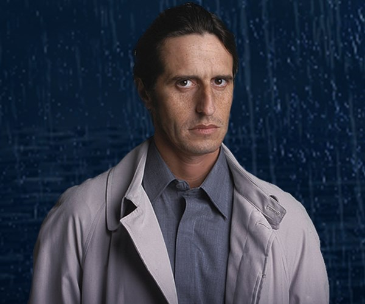

D'Elía como Mario Santos: Se encarga de la logística y planificación de los operativos. Es el líder del grupo y responsable de contactar y llevar adelante la negociación con los clientes.Le gusta beber té Earl Grey, y tras cada operativo satisfactorio fuma un habano, generalmente encendido por la persona engañada.
Fiore como Pablo Lamponne: Se ocupa de la técnica y movilidad. Su labor en el grupo consiste en conseguir los materiales y elementos necesarios para realizar los operativos (vehículos, lugares, vestuario, disfraces, escenografía, etcétera). A veces desempeña pequeños roles.
Diego Peretti como Emilio Ravenna: Se ocupa de la caracterización. Su papel en el grupo es realizar la mayoría de las caracterizaciones, o si no, interpretar al personaje clave del operativo. A diferencia del resto de sus compañeros, tiene una personalidad muy abierta y algo frívola, bastante despreocupada, y una vida sexual muy activa.

Martín Seefeld como Gabriel Medina: Se ocupa de la investigación. Se encarga de obtener la información acerca de los clientes y demás involucrados en los operativos. Antes de entrar en los Simuladores fue periodista. Es sensible y amante de la poesía y los animales (excepto las serpientes).